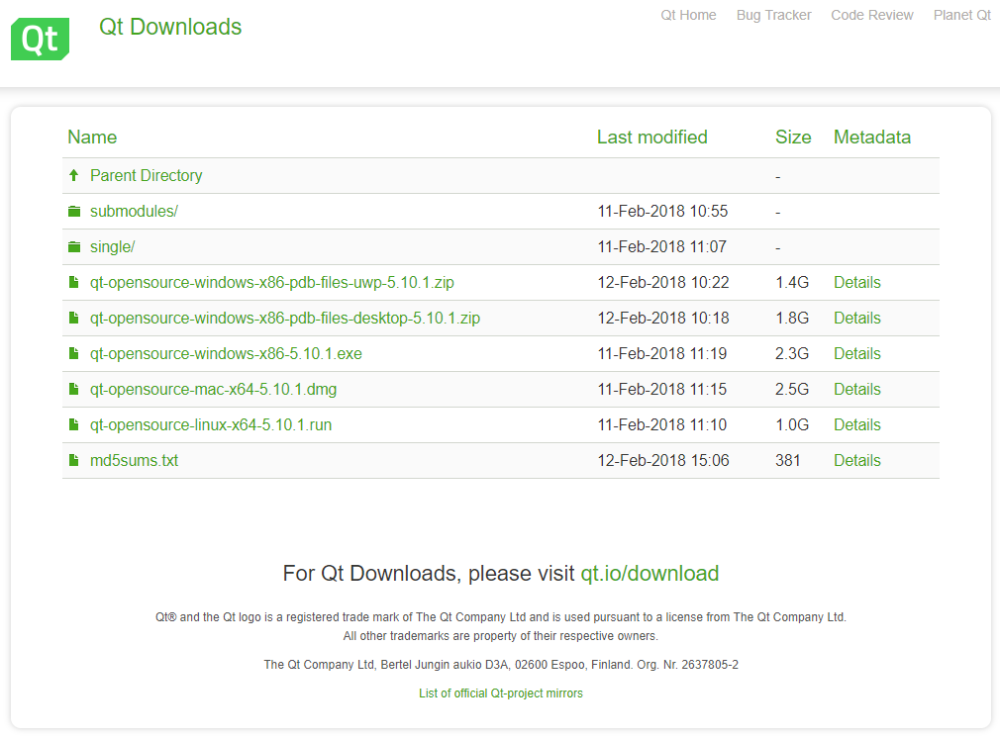

源码¶
为提高模组数据采集软件在不同平台的适应性，同时用户可以根据自己的需求做进一步开发，INDEMIND提供了数据采集软件的源码。
依赖部分¶
Qt版本 5.10.1（Windows/Linux)
警告
Linux版本请注意安装 g++编译器 Open CV依赖
Windows:
Open CV版本open CV 3.1.0
小技巧
官方安装 帮助文档
Linux:
Open CV版本open CV 3.4.0
小技巧
官方安装 帮助文档
请根据实际版本选择安装 例：Ubuntu 18.04/ Ubuntu 16.04
sudo apt install libopencv-dev
源码部分库连接部分
（请将下载好的Open CV依赖放入源码目录或自行修改pro文件）：
Eigen版本 eigen3.31
源码文档中已经包含